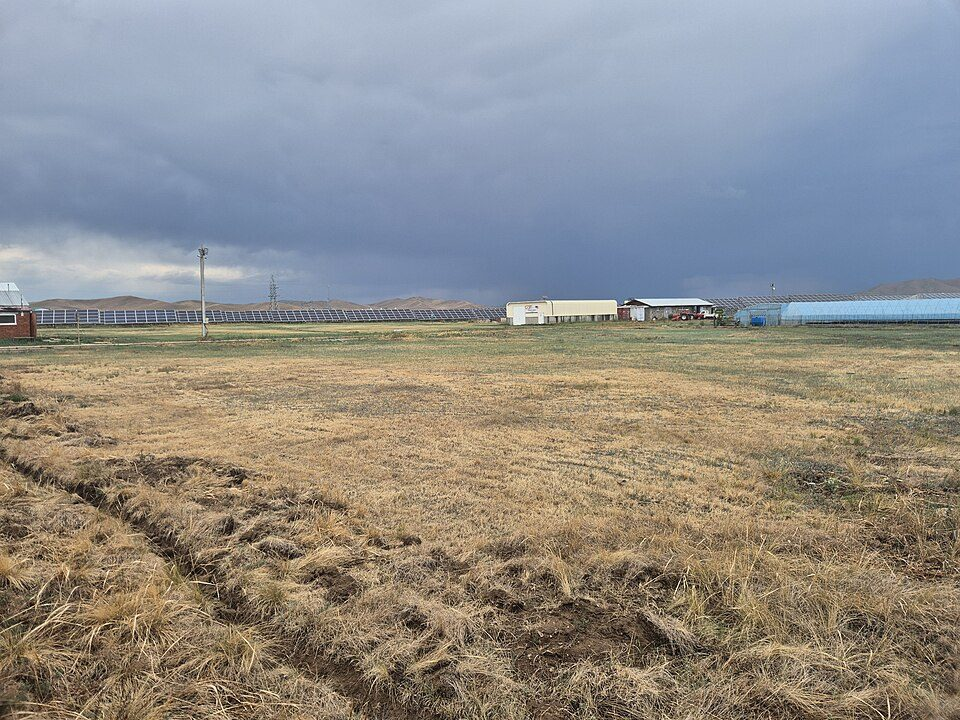

Energía y renovables
Del carbón al sol y el viento: de dónde sale la energía que usamos, cómo funcionan las renovables y por qué España es una potencia solar y eólica.


Todo lo que hacemos necesita energía: movernos, cocinar, calentarnos, fabricar cosas, encender una pantalla. Hoy, alrededor del 80 % de la energía que usa la humanidad sigue saliendo de los combustibles fósiles: carbón, petróleo y gas natural. Al quemarlos se libera el CO₂ que causa el cambio climático.
Energía y electricidad no son lo mismo
La electricidad es solo una parte, alrededor de una quinta, de toda la energía que usamos. El resto es combustible para coches, camiones, barcos, aviones, calefacción e industria. Por eso la transición tiene dos pasos: generar la electricidad con fuentes limpias y electrificar todo lo posible (coches eléctricos, bombas de calor).
Las renovables
- Solar fotovoltaica: las placas convierten la luz en electricidad. Su precio ha bajado alrededor de un 90 % en una década, y hoy es la forma más barata de producir electricidad en gran parte del mundo.
- Eólica: los aerogeneradores modernos miden más de 200 metros, con aspas más largas que un campo de fútbol. Uno solo abastece a miles de hogares.
- Hidráulica: las presas son la renovable más antigua y la que más electricidad produce en el mundo.
- Otras: la solar térmica de concentración, la geotérmica, la biomasa y la de las olas y mareas.


España, potencia renovable
España tiene muchas horas de sol y viento, y lo aprovecha:
- En 2024, las renovables produjeron alrededor del 56 % de la electricidad del país, un récord. La eólica y la solar fueron las dos primeras fuentes.
- Hay días de primavera en que, a mediodía, las renovables cubren toda la demanda.
- La central Gemasolar, en Sevilla, fue la primera del mundo capaz de producir electricidad solar las 24 horas, guardando el calor en sales fundidas.
- En la isla de El Hierro, la central Gorona del Viento combina viento y agua y ha llegado a abastecer la isla con renovables durante semanas seguidas.
El apagón del 28 de abril de 2025, que dejó sin luz a toda la península durante horas, abrió un intenso debate sobre cómo estabilizar una red eléctrica con muchas renovables. Las soluciones pasan por más almacenamiento (baterías, centrales de bombeo), más interconexiones con Europa y sistemas de control de la tensión.
El problema del almacenamiento
El sol no brilla de noche y el viento no siempre sopla. Por eso hacen falta formas de guardar la energía: baterías de litio, cuyo precio también se ha desplomado; centrales de bombeo, que suben agua a un embalse cuando sobra energía y la turbinan cuando falta; y en el futuro, quizá, el hidrógeno verde.
¿Y la nuclear?
La energía nuclear no emite CO₂ al producir electricidad y funciona día y noche, pero genera residuos radiactivos que hay que guardar durante miles de años, y sus centrales son muy caras y lentas de construir. Los países están divididos: Francia obtiene de ella unos dos tercios de su electricidad; Alemania cerró sus últimas centrales en 2023, y España prevé cerrar las suyas entre 2027 y 2035, aunque el calendario está en debate.
Vídeos para entenderlo mejor
- ¿Qué es la energía? - Tipos de energía para niños - Energías renovables y no renovablesSmile and Learn - Español · 3 M visualizaciones
- La breve primavera de la energía eólica en Alemania | DW DocumentalDW Documental · 341 mil visualizaciones
Los vídeos son de YouTube y de sus autores. Se cargan solo al pulsar sobre ellos. Ver todos los vídeos →